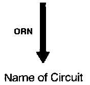
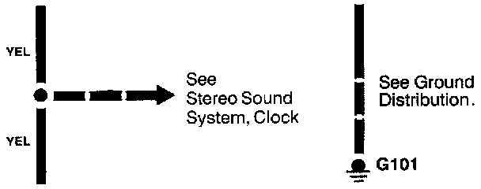
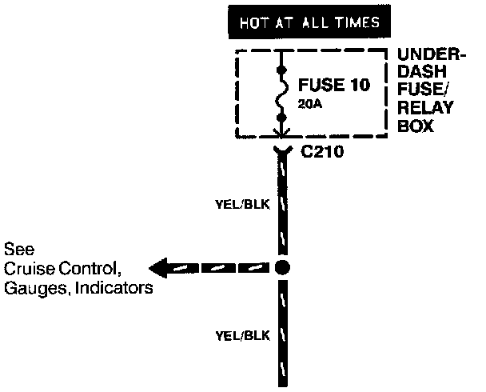
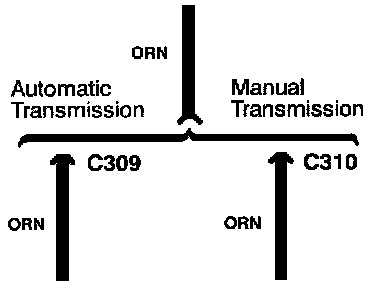
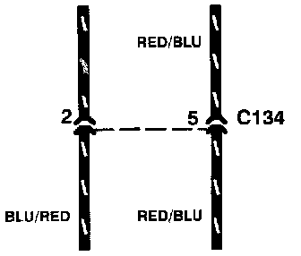

Wires
Wires:
An wavy line at the end of a wire means the wire is broken and continues on another image.
Wires:
Wire insulation can be one color, or one color with another color stripe (The second color is the stripe.)
Wires:
This circuit continues on another image. (The arrow shows direction of current flow) To follow the RED/BLK wire in this example, you would turn to the next image(s) and look for the "Z" arrow.
Wires:

This means the branch of the wire connects to another circuit. The arrow points to the name of the circuit branch where the wire continues.
Wires:

A broken line means this part of the circuit is not shown; refer to the circuit listed for the complete schematic.
Wires:

Where separate wires join, only the splice is shown; for details on the additional wiring, refer to the circuits listed.
Wires:

Wire choices for options or different models are labeled and shown with a "choice" bracket.
Wires:

The broken line shown perpendicular to both wires means both terminals are in connector C134.